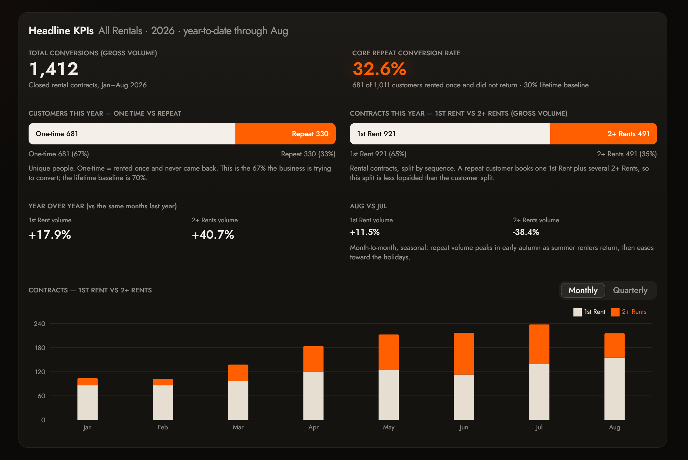
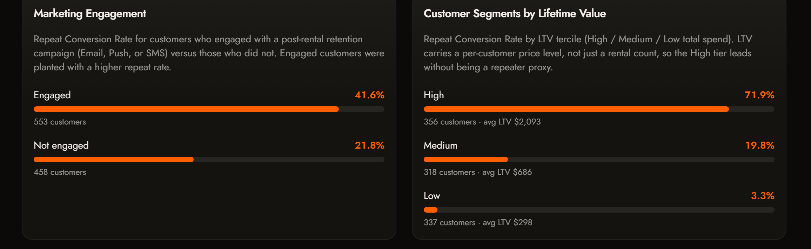
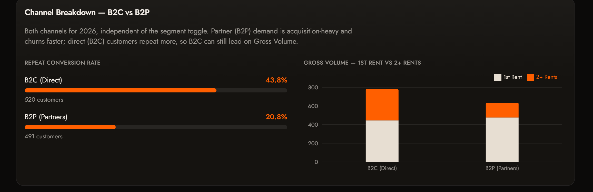
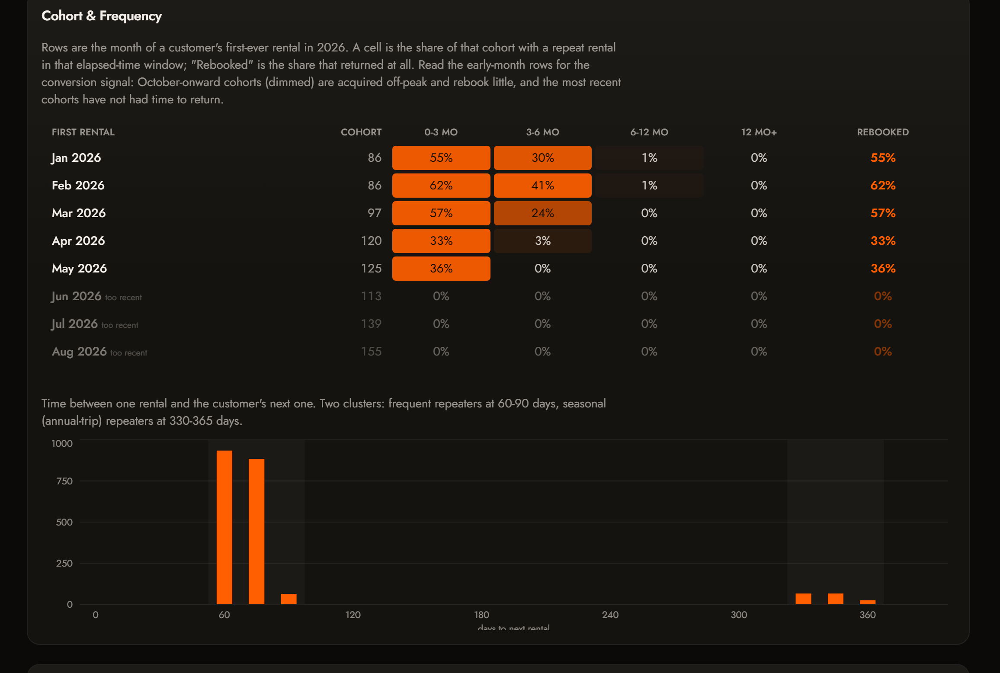

<title>Converting the 70% - Walkthrough</title>
<link rel="preconnect" href="https://fonts.googleapis.com">
<link rel="preconnect" href="https://fonts.gstatic.com" crossorigin>
<link rel="stylesheet" href="https://fonts.googleapis.com/css2?family=Archivo:wght@500;600;700&family=IBM+Plex+Mono:wght@400;500;600&family=IBM+Plex+Sans:wght@400;500;600&display=swap">

<style>
  :root {
    --ground: #fcfcfb;
    --surface: #ffffff;
    --panel: rgba(17, 17, 17, 0.035);
    --ink: #111111;
    --muted: rgba(17, 17, 17, 0.58);
    --faint: rgba(17, 17, 17, 0.42);
    --rule: rgba(17, 17, 17, 0.14);
    --rule-strong: rgba(17, 17, 17, 0.30);
    --accent: #ff5f00;
    --accent-inkwash: #fff1e8;
    --dark: #1b1714;
    --sans: "IBM Plex Sans", ui-sans-serif, system-ui, -apple-system, "Segoe UI", Roboto, sans-serif;
    --display: "Archivo", var(--sans);
    --mono: "IBM Plex Mono", ui-monospace, SFMono-Regular, Menlo, Consolas, monospace;
  }

  *, *::before, *::after { box-sizing: border-box; }

  body {
    margin: 0;
    background: #e9e7e3;
    color: var(--ink);
    font-family: var(--sans);
    font-size: 13px;
    line-height: 1.55;
    -webkit-font-smoothing: antialiased;
    text-rendering: optimizeLegibility;
  }

  .slide {
    position: relative;
    width: 13.333in;
    height: 7.5in;
    margin: 0 auto;
    padding: 0.62in 0.7in 0.58in;
    background: var(--ground);
    overflow: hidden;
    display: flex;
    flex-direction: column;
    box-shadow: 0 0 0 1px rgba(17,17,17,0.10);
  }

  /* running header / footer */
  .kicker {
    display: flex;
    justify-content: space-between;
    align-items: baseline;
    font-family: var(--mono);
    font-size: 10px;
    letter-spacing: 0.14em;
    text-transform: uppercase;
    color: var(--faint);
    border-bottom: 1.5px solid var(--accent);
    padding-bottom: 0.12in;
    margin-bottom: 0.3in;
  }
  .kicker .n { color: var(--ink); font-weight: 500; }

  h2.title {
    font-family: var(--display);
    font-weight: 700;
    font-size: 30px;
    line-height: 1.05;
    letter-spacing: -0.02em;
    margin: 0 0 0.16in;
    text-wrap: balance;
  }
  .sub {
    font-size: 14px;
    color: var(--muted);
    margin: 0 0 0.24in;
    max-width: 66ch;
  }

  .label {
    font-family: var(--mono);
    font-size: 10px;
    font-weight: 600;
    letter-spacing: 0.13em;
    text-transform: uppercase;
    color: var(--faint);
    margin: 0 0 0.06in;
  }

  .cols {
    display: grid;
    grid-template-columns: 1fr 1fr;
    gap: 0.5in;
    flex: 1 1 auto;
    align-items: center;
    min-height: 0;
  }
  .cols.wide-right { grid-template-columns: 0.82fr 1.18fr; align-items: start; }
  .cols.wide-right .stack { align-self: stretch; justify-content: center; }
  .cols.top { align-items: start; }
  .cols.top ul.plain { flex: 0 0 auto; justify-content: flex-start; gap: 0.2in; margin-top: 0.1in; }

  .shot {
    background: var(--dark);
    border: 1px solid var(--rule-strong);
    border-radius: 10px;
    padding: 10px;
    display: flex;
    align-items: center;
    justify-content: center;
    overflow: hidden;
  }
  .shot img { width: 100%; height: 100%; object-fit: contain; display: block; border-radius: 4px; }

  .signal { display: flex; flex-direction: column; flex: 1 1 auto; gap: 0.18in; min-height: 0; }
  .signal .txt { display: flex; flex-direction: column; gap: 0.14in; }
  .signal .txt .lead-note { max-width: 108ch; }
  .signal .shot.full { flex: 1 1 auto; min-height: 0; padding: 12px; }
  .signal .shot.full img { width: 100%; height: auto; max-height: 100%; }
  .signal .caption { margin-top: 0; }
  .caption {
    font-family: var(--mono);
    font-size: 9.5px;
    letter-spacing: 0.04em;
    color: var(--faint);
    margin-top: 0.08in;
  }

  .flag {
    background: var(--accent-inkwash);
    border-left: 2.5px solid var(--accent);
    padding: 0.13in 0.16in;
    font-size: 12.5px;
    line-height: 1.5;
  }
  .flag b { color: var(--ink); }
  .stat { font-family: var(--mono); font-weight: 600; font-variant-numeric: tabular-nums; white-space: nowrap; }

  .hypo {
    font-size: 12.5px;
    line-height: 1.55;
    padding-left: 0.14in;
    border-left: 1px solid var(--rule);
  }
  .hypo i {
    font-family: var(--mono);
    font-style: normal;
    font-size: 9.5px;
    font-weight: 600;
    letter-spacing: 0.06em;
    text-transform: uppercase;
    color: var(--accent);
    margin-right: 0.04in;
  }

  dl.spec {
    margin: 0;
    display: grid;
    grid-template-columns: max-content 1fr;
    gap: 0.07in 0.2in;
    font-size: 11.5px;
    line-height: 1.4;
  }
  dl.spec dt {
    font-family: var(--mono);
    font-size: 9px;
    font-weight: 500;
    letter-spacing: 0.04em;
    text-transform: uppercase;
    color: var(--faint);
    padding-top: 0.02in;
  }
  dl.spec dd { margin: 0; }

  .metrics { display: flex; flex-direction: column; gap: 0.09in; font-size: 11.5px; line-height: 1.42; }
  .metrics .k {
    font-family: var(--mono);
    font-size: 9px;
    font-weight: 600;
    letter-spacing: 0.09em;
    text-transform: uppercase;
    color: var(--faint);
    margin-right: 0.08in;
  }
  .metrics .primary { color: var(--accent); font-weight: 500; }

  .impact {
    margin-top: 0.05in;
    padding-top: 0.16in;
    border-top: 1px solid var(--rule);
    font-size: 12.5px;
    line-height: 1.5;
  }
  .rating {
    display: inline-block;
    font-family: var(--mono);
    font-size: 9px;
    font-weight: 600;
    letter-spacing: 0.1em;
    text-transform: uppercase;
    padding: 0.04in 0.1in;
    margin-right: 0.1in;
    border: 1px solid var(--rule-strong);
    color: var(--ink);
  }
  .rating.high { border-color: var(--accent); color: var(--accent); }

  .stack { display: flex; flex-direction: column; gap: 0.2in; min-height: 0; }
  .block { display: flex; flex-direction: column; }

  ul.plain {
    margin: 0; padding: 0; list-style: none;
    display: flex; flex-direction: column; justify-content: center;
    gap: 0.26in;
    flex: 1 1 auto;
  }
  ul.plain li {
    display: grid;
    grid-template-columns: 1.5in 1fr;
    gap: 0.05in 0.3in;
    font-size: 14px;
    line-height: 1.55;
  }
  ul.plain li span:first-child {
    font-family: var(--mono);
    font-size: 10px;
    font-weight: 600;
    letter-spacing: 0.08em;
    text-transform: uppercase;
    color: var(--faint);
    padding-top: 0.04in;
  }
  code {
    font-family: var(--mono);
    font-size: 0.86em;
    background: var(--accent-inkwash);
    padding: 0.01in 0.05in;
  }

  /* title slide */
  .cover { justify-content: center; padding: 0.9in 1in; }
  .cover .eyebrow {
    font-family: var(--mono);
    font-size: 11px;
    letter-spacing: 0.18em;
    text-transform: uppercase;
    color: var(--muted);
    margin-bottom: 0.28in;
  }
  .cover h1 {
    font-family: var(--display);
    font-weight: 700;
    font-size: 62px;
    line-height: 0.98;
    letter-spacing: -0.025em;
    margin: 0 0 0.26in;
  }
  .cover .lede { font-size: 17px; color: var(--muted); max-width: 52ch; margin: 0 0 0.5in; }
  .cover .meta {
    display: flex;
    flex-wrap: wrap;
    gap: 0.12in 0.5in;
    padding-top: 0.2in;
    border-top: 2px solid var(--accent);
    font-family: var(--mono);
    font-size: 10.5px;
    letter-spacing: 0.03em;
    color: var(--faint);
  }
  .cover .meta b { color: var(--ink); font-weight: 500; }

  .big {
    font-family: var(--display);
    font-weight: 700;
    font-size: 27px;
    line-height: 1.12;
    letter-spacing: -0.015em;
    margin: 0 0 0.16in;
    text-wrap: balance;
  }
  .big .accent { color: var(--accent); }

  .lead-note { font-size: 12.5px; color: var(--muted); line-height: 1.55; }

  @media screen and (max-width: 960px) {
    .slide { transform: scale(0.72); transform-origin: top center; margin-bottom: -1.6in; }
  }

  @media print {
    body { background: #fff; }
    .slide {
      margin: 0;
      box-shadow: none;
      break-inside: avoid;
    }
    .slide + .slide { break-before: page; }
    * { -webkit-print-color-adjust: exact; print-color-adjust: exact; }
  }
  @page { size: 13.333in 7.5in; margin: 0; }
</style>

<!-- 1 . COVER -->
<section class="slide cover">
  <p class="eyebrow">Sixt &nbsp;/&nbsp; Growth &amp; CRM &nbsp;/&nbsp; Case study walkthrough</p>
  <h1>Converting<br>the 70%</h1>
  <p class="lede">Three CRM initiatives to move Sixt US leisure customers from one&#8209;time to repeat &mdash; each anchored to a signal on the conversion dashboard, each with a measurement plan.</p>
  <div class="meta">
    <span>North&#8209;star&nbsp; <b>Core Repeat Conversion Rate</b></span>
    <span>Source&nbsp; <b>Sixt CRM Dashboard</b> (generated mock data)</span>
    <span>Format&nbsp; <b>Dashboard tour + 3 experiments</b></span>
  </div>
</section>

<!-- 2 . THE PROBLEM -->
<section class="slide">
  <div class="kicker"><span>The problem</span><span class="n">02</span></div>
  <div class="cols wide-right">
    <div class="stack">
      <p class="big">70% of US leisure customers rent <span class="accent">once and never return</span> &mdash; 2,800 of the 4,000 in the dataset.</p>
      <div class="block">
        <p class="label">The one number this is about</p>
        <p class="lead-note">The <b>Core Repeat Conversion Rate</b> (orange) = unique customers in the period who are lifetime repeaters &divide; all unique customers in the period. It sits just above its 30% lifetime baseline and moves year to year: <span class="stat">34.6%</span> in 2024, <span class="stat">36.7%</span> in 2025, <span class="stat">32.6%</span> 2026 year&#8209;to&#8209;date.</p>
      </div>
      <div class="block">
        <p class="label">Reading the dashboard</p>
        <p class="lead-note">One segment toggle (All / B2C / B2P) and one year selector recompute every view in the browser. Six views feed the story: headline, channel, engagement, LTV, cohort &amp; frequency, assumptions. Each initiative that follows is tied to one of them.</p>
      </div>
    </div>
    <div>
      <div class="shot"></div>
      <p class="caption">Headline KPIs &mdash; All Rentals, 2026</p>
    </div>
  </div>
</section>

<!-- 3 . SIGNAL 1 -->
<section class="slide">
  <div class="kicker"><span>Signal for initiative 1 &middot; Marketing Engagement</span><span class="n">03</span></div>
  <div class="signal">
    <div class="txt">
      <h2 class="title">Reached customers repeat at twice the rate</h2>
      <div class="flag">Customers who engaged with a retention campaign repeat at <span class="stat">41.6%</span> versus <span class="stat">21.8%</span> for those who did not (2026 population). The relationship is planted in the mock data and correlational by construction &mdash; but the <b>reach gap</b> is the real leverage: about <span class="stat">66%</span> of B2C customers are touched by a campaign, against only <span class="stat">39%</span> of B2P.</div>
      <p class="lead-note">The programme is not yet run against the customers most likely to churn. (The High&#8209;LTV tier repeats at <span class="stat">~72%</span>, but LTV is a price&#8209;level proxy, not a lever &mdash; it says where value sits, not what to send.)</p>
    </div>
    <div class="shot full"></div>
    <p class="caption">Marketing Engagement &amp; LTV segments &mdash; All Rentals, 2026</p>
  </div>
</section>

<!-- 4 . INITIATIVE 1 -->
<section class="slide">
  <div class="kicker"><span>Initiative 1</span><span class="n">04</span></div>
  <h2 class="title">Put every one&#8209;time renter into a post&#8209;rental retention flow</h2>
  <p class="sub">The bet: a light, well&#8209;timed sequence after the trip keeps Sixt in the consideration set for the next one. The barrier for most one&#8209;timers is recall at the moment of the next trip, not intent.</p>
  <div class="cols wide-right">
    <div class="stack">
      <div class="block">
        <p class="label">Hypothesis</p>
        <p class="hypo"><i>If</i> a completed one&#8209;time rental is enrolled within 7 days into a four&#8209;touch flow (thank&#8209;you &rarr; destination tips &rarr; day&#8209;75 &ldquo;ready for your next trip&rdquo; &rarr; win&#8209;back at day 200), <i>then</i> its probability of a second rental within 365 days rises by <b>&ge; 3 pp</b>, <i>because</i> the block is memory at the decision moment, not desire.</p>
      </div>
      <div class="block">
        <p class="label">A/B test</p>
        <dl class="spec">
          <dt>Unit</dt><dd>Individual customer, at rental completion.</dd>
          <dt>Split</dt><dd>50 / 50 at return, continuous enrolment.</dd>
          <dt>Treatment</dt><dd>Enrolled in the retention flow.</dd>
          <dt>Control</dt><dd>Transactional messages only (receipt, damage, survey).</dd>
          <dt>Channels</dt><dd>Email (primary) &middot; Push (if app) &middot; SMS (day&#8209;75 only).</dd>
          <dt>Readout</dt><dd>Cohorts at 90 / 180 / 365 days.</dd>
        </dl>
      </div>
    </div>
    <div class="stack">
      <div class="block">
        <p class="label">Success metric</p>
        <div class="metrics">
          <div><span class="k">Primary</span><span class="primary">Repeat conversion rate at 365 days, treatment vs control.</span> Ship on &ge; 2 pp absolute lift at 95% confidence.</div>
          <div><span class="k">Secondary</span>Time&#8209;to&#8209;second&#8209;rental; rentals per customer at 365 days.</div>
          <div><span class="k">Guardrail</span>Unsubscribe &lt; 0.5% per send; contribution margin per rental flat or up.</div>
        </div>
      </div>
      <div class="impact">
        <span class="rating high">High &mdash; direct</span> The primary metric <em>is</em> the north&#8209;star. A 3&nbsp;pp lift across the enrolled base moves the blended rate by roughly <b>2&nbsp;pp</b>.
      </div>
    </div>
  </div>
</section>

<!-- 5 . SIGNAL 2 -->
<section class="slide">
  <div class="kicker"><span>Signal for initiative 2 &middot; Channel Breakdown</span><span class="n">05</span></div>
  <div class="signal">
    <div class="txt">
      <h2 class="title">B2P is half the base and barely repeats</h2>
      <div class="flag">B2P (Partners) repeats at <span class="stat">20.8%</span> against B2C&rsquo;s <span class="stat">43.8%</span>. B2P is <b>80% one&#8209;time</b> and roughly <b>half</b> the customer base &mdash; the single largest drag on the blended rate.</div>
      <p class="lead-note">B2C can still show higher Gross Volume because its repeaters add extra contracts. The gap is not a volume problem &mdash; it is a <b>relationship</b> problem: a broker booking never creates the account, the saved payment method or the marketing consent that a direct booking does.</p>
    </div>
    <div class="shot full"></div>
    <p class="caption">Channel Breakdown &mdash; both channels, 2026</p>
  </div>
</section>

<!-- 6 . INITIATIVE 2 -->
<section class="slide">
  <div class="kicker"><span>Initiative 2</span><span class="n">06</span></div>
  <h2 class="title">Move B2P (broker) customers onto a direct relationship</h2>
  <p class="sub">The bet: B2P customers don&rsquo;t come back because their next booking sits with the broker, not Sixt. Give them a reason to book direct once, and the relationship &mdash; and the consent &mdash; follows.</p>
  <div class="cols wide-right">
    <div class="stack">
      <div class="block">
        <p class="label">Hypothesis</p>
        <p class="hypo"><i>If</i> a B2P customer is prompted at pickup or return to create a direct Sixt account, with a bounded incentive on their next booking on sixt.com (&euro;25 off, expires in 6 months), <i>then</i> their 365&#8209;day repeat rate moves a third of the way toward B2C (<b>~21% &rarr; ~29%</b>), <i>because</i> the first direct booking establishes the account, payment method and consent a broker booking never creates.</p>
      </div>
      <div class="block">
        <p class="label">A/B test</p>
        <dl class="spec">
          <dt>Unit</dt><dd>B2P rental, randomised at pickup.</dd>
          <dt>Split</dt><dd>50 / 50, stratified by broker partner.</dd>
          <dt>Treatment</dt><dd>Account&#8209;creation prompt + next&#8209;direct&#8209;booking incentive.</dd>
          <dt>Control</dt><dd>Standard B2P experience, no prompt.</dd>
          <dt>Channels</dt><dd>Email + SMS &middot; QR prompt on the rental agreement.</dd>
          <dt>Readout</dt><dd>180 and 365 days; funnel checked weekly.</dd>
        </dl>
      </div>
    </div>
    <div class="stack">
      <div class="block">
        <p class="label">Success metric</p>
        <div class="metrics">
          <div><span class="k">Primary</span><span class="primary">365&#8209;day repeat conversion rate, treated B2P vs control.</span></div>
          <div><span class="k">Funnel</span>Direct&#8209;account creation &rarr; next rental books direct &rarr; incentive redemption.</div>
          <div><span class="k">Guardrail</span>Incremental margin per converted customer positive after incentive cost; control isolates customers who would have rebooked anyway.</div>
        </div>
      </div>
      <div class="impact">
        <span class="rating high">High</span> Closing a third of the B2C&ndash;B2P gap on half the base lifts the blended Core Repeat Conversion Rate by <b>~2&ndash;3&nbsp;pp</b>.
      </div>
    </div>
  </div>
</section>

<!-- 7 . SIGNAL 3 -->
<section class="slide">
  <div class="kicker"><span>Signal for initiative 3 &middot; Cohort &amp; Frequency</span><span class="n">07</span></div>
  <div class="cols">
    <div class="stack">
      <h2 class="title">Rebooking happens in two windows &mdash; Q4 acquisitions miss both</h2>
      <div class="flag">Time&#8209;to&#8209;next&#8209;rental has two clean clusters: <span class="stat">60&ndash;90 days</span> (frequent renters, ~1,100 customers) and <span class="stat">~330&ndash;365 days</span> (annual&#8209;trip renters, ~99 customers).</div>
      <p class="lead-note">The cohort matrix adds the timing problem: Jan&ndash;Sep acquisitions rebook at <span class="stat">~37%</span> ever, but <b>Oct&ndash;Dec acquisitions rebook at <span class="stat">2&ndash;6%</span></b>. They are acquired off&#8209;peak, and a generic monthly newsletter never lands inside a planning window.</p>
    </div>
    <div>
      <div class="shot"></div>
      <p class="caption">Cohort &amp; Frequency &mdash; All Rentals, 2026</p>
    </div>
  </div>
</section>

<!-- 8 . INITIATIVE 3 -->
<section class="slide">
  <div class="kicker"><span>Initiative 3</span><span class="n">08</span></div>
  <h2 class="title">Time re&#8209;engagement to the two natural rebooking windows</h2>
  <p class="sub">The bet: a message inside a trip&#8209;planning window converts far better than a fixed monthly newsletter. This initiative rides on Initiative 1&rsquo;s population &mdash; it is a timing change, not a new audience.</p>
  <div class="cols wide-right">
    <div class="stack">
      <div class="block">
        <p class="label">Hypothesis</p>
        <p class="hypo"><i>If</i> the generic monthly newsletter is replaced by two behaviour&#8209;timed triggers &mdash; a &ldquo;next trip?&rdquo; nudge at day 75 and a &ldquo;book your summer trip again&rdquo; reminder at month 11 for summer renters &mdash; <i>then</i> second&#8209;rental rate rises, most for the Q4&#8209;acquired cohort, <i>because</i> the send now coincides with when the customer is choosing their next rental.</p>
      </div>
      <div class="block">
        <p class="label">A/B test</p>
        <dl class="spec">
          <dt>Population</dt><dd>Within Initiative 1&rsquo;s enrolled group.</dd>
          <dt>Split</dt><dd>50 / 50, stratified by acquisition month (Jun&ndash;Aug vs Oct&ndash;Dec).</dd>
          <dt>Treatment</dt><dd>Cadence&#8209;timed triggers, replacing the newsletter.</dd>
          <dt>Control</dt><dd>Generic monthly newsletter.</dd>
          <dt>Channels</dt><dd>Day&#8209;75: Email + SMS + Push &middot; Month&#8209;11: Email + Push.</dd>
          <dt>Readout</dt><dd>120 days (frequent arm), 400 days (seasonal arm).</dd>
        </dl>
      </div>
    </div>
    <div class="stack">
      <div class="block">
        <p class="label">Success metric</p>
        <div class="metrics">
          <div><span class="k">Primary</span><span class="primary">Second&#8209;rental rate at 120 days (frequent) and 400 days (seasonal) vs control.</span></div>
          <div><span class="k">Efficiency</span>Incremental repeat conversions per 1,000 sends; send volume neutral or lower.</div>
          <div><span class="k">Segment</span>Repeat&#8209;rate lift for the Oct&ndash;Dec acquisition cohort specifically.</div>
        </div>
      </div>
      <div class="impact">
        <span class="rating">Medium &mdash; compounding</span> Smaller standalone effect &mdash; the seasonal arm is only ~99 customers today &mdash; but it multiplies Initiative 1 (same population, better timing) and rescues the near&#8209;zero Q4 cohort.
      </div>
    </div>
  </div>
</section>

<!-- 9 . MEASUREMENT FRAMEWORK -->
<section class="slide">
  <div class="kicker"><span>How every test is measured</span><span class="n">09</span></div>
  <h2 class="title">One measurement spine under all three</h2>
  <ul class="plain">
    <li><span>North&#8209;star</span><span>Core Repeat Conversion Rate &mdash; unique customers in an acquisition cohort with a 2nd&#8209;plus lifetime rental &divide; cohort size &mdash; read at fixed horizons <code>90 / 180 / 365 / 400 days</code> because rebooking is bimodal.</span></li>
    <li><span>Design</span><span>Randomised holdout, never pre / post. Seasonality and the double&#8209;digit growth trend would otherwise contaminate the read.</span></li>
    <li><span>Incrementality</span><span>A permanent <code>10%</code> global control, refreshed yearly, measures the whole programme against no CRM contact.</span></li>
    <li><span>Decision rule</span><span>Ship when the 365&#8209;day repeat&#8209;rate lift is <b>at least +2 pp</b> absolute at 95% confidence <em>and</em> contribution margin per customer is not down.</span></li>
    <li><span>Guardrails</span><span>Opt&#8209;out rate, spam&#8209;complaint rate, margin per rental, and send fatigue (open / click trend) tracked on every arm.</span></li>
    <li><span>Power</span><span>Detecting a <b>+2 pp</b> lift on a ~20% base needs ~6,500 customers per arm. Initiatives 1 &amp; 3 reach that in ~1 quarter at production volume; Initiative 2 (B2P only) in ~4&ndash;5 months.</span></li>
  </ul>
</section>

<!-- 10 . CLOSE -->
<section class="slide">
  <div class="kicker"><span>Sequencing &amp; close</span><span class="n">10</span></div>
  <div class="cols top">
    <div class="stack">
      <h2 class="title">What I&rsquo;d run, and in what order</h2>
      <ul class="plain">
        <li><span>Parallel</span><span>Run Initiatives 1 and 2 at the same time &mdash; different populations, no interference.</span></li>
        <li><span>Then</span><span>Start Initiative 3 once Initiative 1 has a stable enrolled base (~1 month in).</span></li>
        <li><span>If only one</span><span>Initiative 1 &mdash; widest population, fastest read, and its primary metric is the goal itself.</span></li>
      </ul>
    </div>
    <div class="stack">
      <div class="block">
        <p class="label">Honest caveats</p>
        <p class="lead-note">Figures are from generated mock CRM data, not real Sixt results. The engagement&#8209;to&#8209;repeat and LTV&#8209;to&#8209;repeat relationships are correlational by construction; the effect sizes above are <b>targets the tests would establish</b>, not assumptions. The Q4 rebooking cliff is partly a property of the data model &mdash; but off&#8209;peak leisure renters being less repeat&#8209;prone is a plausible real effect worth testing.</p>
      </div>
      <div class="block">
        <p class="label">The through&#8209;line</p>
        <p class="lead-note">Every initiative targets a mechanism Sixt can actually pull &mdash; a message, a prompt, a cadence &mdash; and every one reads out on the same orange number.</p>
      </div>
    </div>
  </div>
</section>
